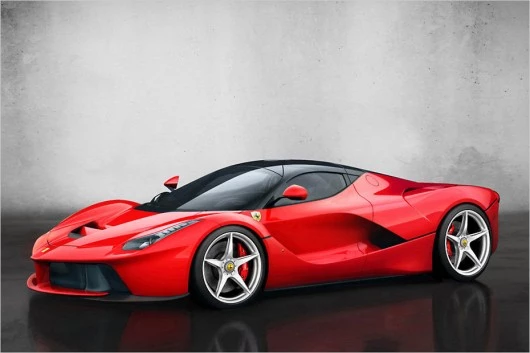
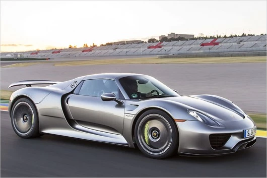
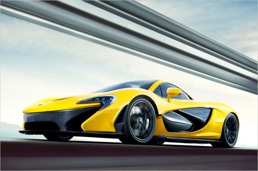
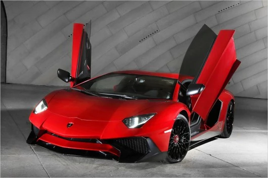
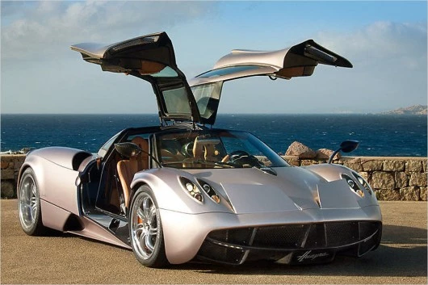

1. Автомобиль Laferrari

Только 499 экземпляров таких LaFerrari
существует в мире в настоящий момент. Это королева скорости модельного
ряда машин Ferrari. Каждый такой автомобиль стоит около 1,2 миллиона евро. Он оснащен гибридной силовой
установкой "HY-KERS" состоящей из 6,3-литрового V12 двигателя мощностью 800 л.с., который может работать без
ущерба для себя и развивать до 9250 тыс. об/мин. Также машина оснащена и электротяговой установкой в 120 кВт
(мощностью 163 л.с.).
Но главное здесь не характеристики двигателя, а то, что эта автомашина может
делать в
реальности. Так вот, на дороге этот гиперкар может показывать просто фантастическую динамичность. Так,
например, с 0 до 300 км/час автомобиль разгоняется всего за 15 секунд.
- Цена машины в Европе: 1 млн. 200 тыс. Евро.
- Мощность: 963 л.с.
- Крутящий момент: 900 Нм.
- Максимальная скорость: 350 км/ч.
- С 0 до 100 км/ч: 3 секунды.
2. Автомобиль Porsche 918 Spyder

Чтобы купить этот автомобиль недостаточно всего лишь заплатить отпускную заводскую цену машины в размере
768
тыс. 026 Евро. Дело в следующем. Всего было выпущено 918 штук таких автомобилей, которые естественно все
сразу
раскупили. Так что. для тех фанатов скорости и мощи, кто хочет приобрести этот суперкар, придётся
постараться
не только найти владельца такого автомобиля, но и уговорить его продать эту редкую машину именно вам. Эта
машина оснащена гибридной силовой установкой.
В качестве дополнительного пакета опции предусмотрена
доплата
в
60 тыс. евро, где владелец машины может увеличить ее мощность, благодаря чему этот гиперкар сможет
разгоняться
с 0 до 100 км/ч всего за 2,6 секунды.
- Цена машины в Европе: 768 тыс. Евро.
- Мощность: 887 л.с.
- Крутящий момент: 1280 Нм.
- Максимальная скорость: 345 км/ч.
- С 0 до 100 км/ч: 2,6 секунды.
3. Автомобиль McLaren P1
Еще один представитель семейства «гиперкаров», который оснащен би-турбированным восьмицилиндровым мотором мощностью 737 л.с. и электросиловой установкой мощностью 179 л.с. В совокупном итоге мощность данного спортивного автомобиля составляет 916 л.с.
- Цена машины в Европе: 1 млн. 067 тыс. Евро.
- Мощность: 916 л.с.
- Крутящий момент: 900 Нм.
- Максимальная скорость: 350 км/ч.
- С 0 до 100 км/ч: 2,8 секунды.
4. Автомобиль Lamborghini Aventador SV
Самый сильный спорткар компании Lamborghini обозначается, как Aventador LP 750-4 SuperVeloce. Итальянцы хорошо поработали над начинкой этого спортивного автомобиля добившись таким образом увеличения мощности стандартной автомодели Aventador, и все это за счет уменьшения веса и при помощи новых технологий, которые позволили заменить металл в конструкции машины на углеволокно, а также за счет улучшения аэродинамики и ряда других инженерных решений. Например, вес этого Aventador LP 750-4 SuperVeloce составляет 1525 кг.
- Цена машины в Европе: 389 тыс. 356 Евро.
- Мощность: 750 л.с.
- Крутящий момент: 690 Нм.
- Максимальная скорость: 350 км/ч.
- С 0 до 100 км/ч: 2,8 секунды.
5. Автомобиль Pagani Huayra
После эволюции спортивных автомобилей марки Pagani в последние 13 лет, на рынок был выведен удивительный суперкар оснащенный твин-турбо двигателем V12, который выпустила (и выпускает) компания "Мерседес" подразделения " AMG". Спортивный автомобиль Pagani Huayra способен подарить своему владельцу ощущения авиационного полета. В этой автомашине любой водитель сможет ощутить себя заядлым автогонщиком на треке.
- Цена машины в Европе: 1 млн. 061 тыс. 480 Евро.
- Мощность: 730 л.с.
- Крутящий момент: 1000 Нм.
- Максимальная скорость: 360 км/ч.
- С 0 до 100 км/ч: 3,3 секунды.